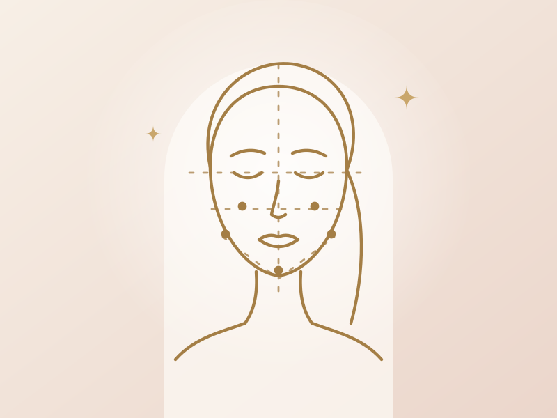

Harmonização facial
Conjunto de técnicas que equilibra as proporções do rosto e valoriza seus traços de forma sutil.
- Planejamento feito após análise facial
- Pode combinar preenchimento, toxina e bioestimuladores
- Foco em naturalidade, sem descaracterizar